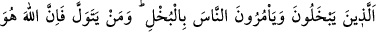
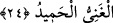

24. Onlar cimrilik edip insanlara da cimriliği emrederler. Kim yüz çevirirse
şüphesiz ki Allah zengindir, hamde lâyıktır.
“Onlar, cimrilik edip insanlara da cimriliği emrederler.” Bu âyette geçen bâhil,
yukarıda muhtâl diye geçen bütün kendini beğenenlerden bedeldir. Çünkü kendini malı
sebebiyle beğenen muhtâl, hem malı konusunda cimrilik eder, hem de başkasına
cimriliği emreder. Bu da en kötü bir durumdur. Bu kişi, hem insanlara karşı cimrilik
eder, hem de başkasına cimriliği emreder. Mânâ şöyle olur: Onlar mallarını ellerinde
tutarlar ve Allah’ın hakkı olan sadakaları ondan ayırıp vermezler. Böyle olunca
cimrilik, kazancın biriktirilmiş olanından verilmesi gereken kimselere ayırıp
vermeksizin tutmak olup zıddı cömertliktir. Denilmiştir ki: Râhimin merhametli, rahîmin
ise en merhametli olması gibi, bâhil cimri, bahîl ise çok cimrilik eden kimsedir.
Cimrilik iki kısımdır: Birincisi kendi malında cimrilik, ikincisi başkasının malında
cimrilik. Bu ikincisi en çok olanıdır. Zaten Müfredât’ta da ifâde edildiği gibi “Onlar
cimrilik edip insanlara da cimriliği emrederler...” âyet-i kerîmesi bunu ifâde etmektedir.
Muhtâl ve fahûr, dünya nimetlerini biriktirmek suretiyle ona sâhip olup cimrilik yapan
kimselerdir. Bu kimseler mallarını Allah yolunda sarf etmezler. Kendileri cimri
oldukları gibi başkalarına da cimrilik yapmaları konusunda emir ve tavsiyede
bulunurlar.
Hadîs-i şerîfle Peygamberimiz (s.a.) Seleme oğullarına “Efendiniz kimdir?” buyurdu.
“Cedd b. Kays’dır ve biz onu cimri görüyoruz.” dediler. Peygamberimiz (s.a.):
“Cimrilikten daha büyük bir hastalık varmıdır? Hayır, sizin efendiniz (cömert olan)
Ebyaz Amr b. el-Cemûh’tur.” buyurdu.[273]
Yine bir hadîs-i şerîfte şöyle buyruldu: “Kokusu beşyüz yıllık mesafeden
duyulabildiği halde, dört kişi cennet kokusunu duymayacaklardır: Cimri, yaptığı
iyiliği başa kakan, sarhoşluk verici şeylere devam eden ve ana babaya isyan eden
kimse.”[274]
“Kim yüz çevirirse şüphesiz ki Allah zengindir, hem de övülmeye lâyıktır.” Kim
Allah yolunda harcamaktan yüz çevirirse, Allah hem ona hem de onun harcamasına
muhtaç değildir. O, zâtında övülmeğe lâyıktır. Kullarının O’na şükr etmekten yüz
çevirmelerinin kendisine zarar vermediği gibi, nîmetlerinden bir şey ile O’na yönelip
yaklaşmaları da kendisine herhangi fayda sağlamaz.
Bu âyette, hem bir tehdid, hem de bir îlân vardır: Yâni Allah yolunda harcamanın
emredilmesi aslında harcayanın iyiliği içindir. Ayrıca şuna işâret vardır: Allah’a
yaklaşmaktan yüz çevirir ve o yolda harcamaktan geri durursa, Allah’ın zâtı itibariyle